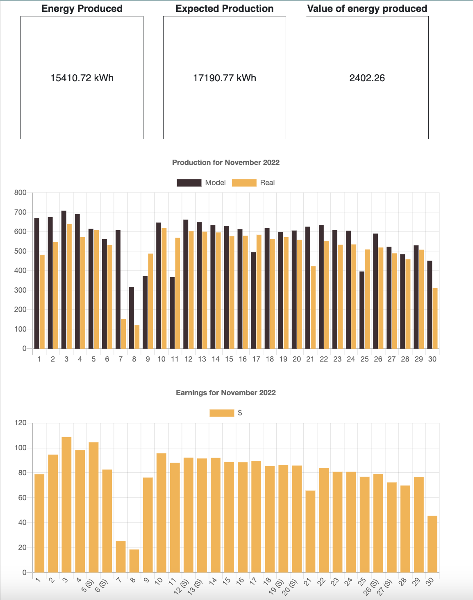
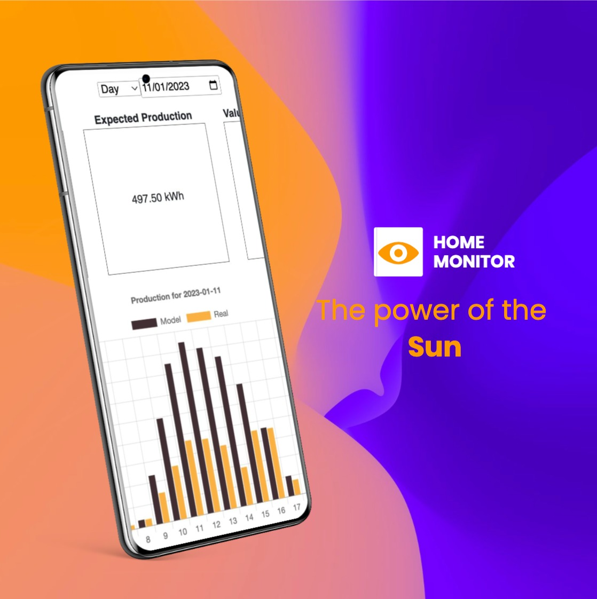

Solar Bay Area
In this project the client wanted to centralize information coming from different APIs. The system should retrieve the information, compare it with expected values, and send automatic emails when inconsistencies were found.
Overview
First, users need to register and validate their email. After that they can log into the system and link their account with an installed solar system.
When linking these two systems they would be able to see the information about the installed system that a third-party API had, and also they can start seeing graphs of energy production in different time periods.
This system allowed the users to have an understandable system with only the relevant information, and get notified without the system technician having to manually check the information for possible issues.
Frontend
React, HTML, CSS, Chart.js, Bootstrap
Backend
Python, Django, unittest
Database
Postgresql
 